Custom UI is the control panel for your lighting system. Open it in a web browser on any phone, tablet or computer connected to the same network as your controller, and you can start and stop shows, paint your lights any color, run animated effects, build your own playlists and manage the schedule — all without any technical knowledge.
This manual walks through every page of the control panel. Each screenshot has 123 numbered markers; the numbered list under it explains what each marked item does.
What you can do
Controls — one-tap play for every show, scene and effect, plus a Stop button, master brightness and a live look at what the schedule is doing.
Color — pick any color for any combination of zones, save favorite colors as buttons, and save multi-zone looks as scenes.
Effects — animated effects (aurora, plasma, meteor…) with adjustable settings and a live preview. Save favorites as presets.
Playlists — chain scenes, effects and sequences together into your own show.
Schedule — decide what plays, on which days, starting and ending when — including sunset-relative start times and named date ranges that repeat every year.
Settings — rename and recolor the panel, set up email alerts, manage zones, back up your configuration, change your PIN and more.
Quick start
On a phone or computer on the same network, open the address your installer gave you (it looks like http://192.168.1.42/yourname).
Enter your 4-digit PIN on the number pad.
Tap Controls in the top bar, then tap Play on any show. The status bar confirms it is playing.
Tap Stop to end it.
Tip Bookmark the address on your phone's home screen. The panel is designed for touch screens and works just as well on a phone as on a computer.
First-Time Setup
A brand-new controller asks you to create a PIN the first time anyone opens it. This only happens once. (If your installer already set the system up for you, skip ahead to Signing In.)
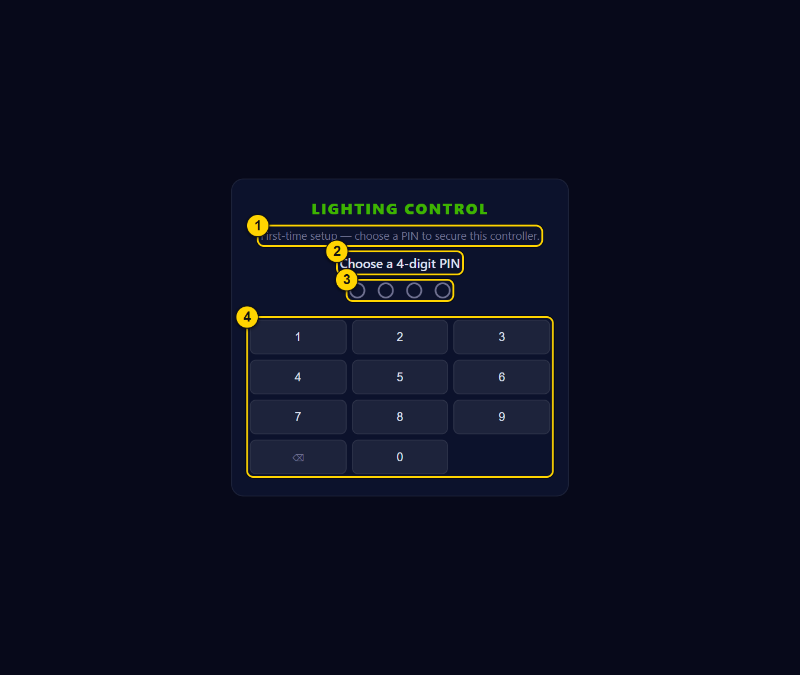
Step 1 — choose a 4-digit PIN.
1
Welcome message. Confirms this is first-time setup.
2
Step label. Tells you which step you are on.
3
PIN dots. Fill in as you type each digit.
4
Number pad. Tap four digits. Use the ⌫ key to correct a mistake.
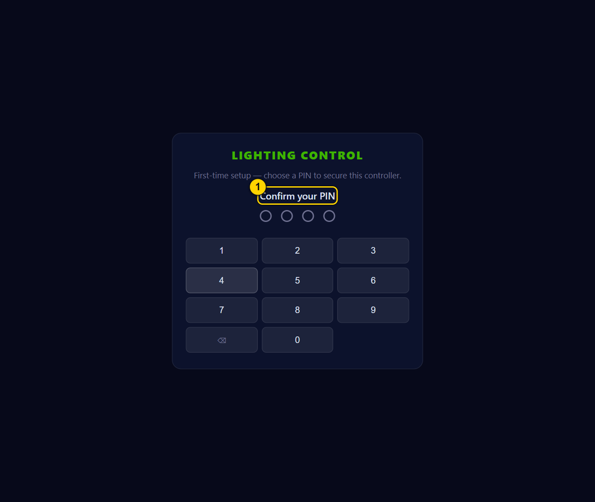
Step 2 — enter the same PIN again to confirm.
If the two entries do not match, you are taken back to step 1 to try again.
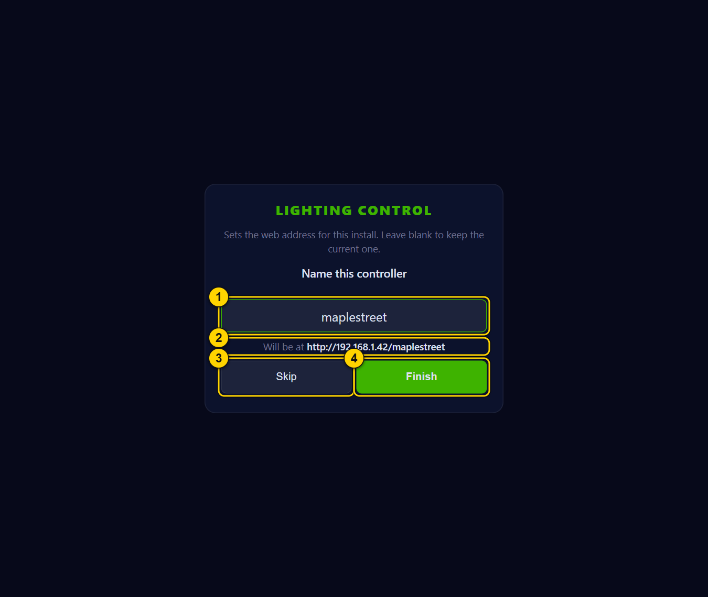
Step 3 — optionally give the controller its own web address.
1
Name field. Type a short name such as maplestreet. Letters, numbers and dashes work best.
2
Address preview. Shows the exact address you will use from now on.
3
Skip. Keep the default address.
4
Finish. Save the name and finish setup. You are signed in automatically.
Note First-time setup can only be done from a device on the same local network as the controller. Write your PIN down somewhere safe — see Security if you ever need to change it.
Signing In
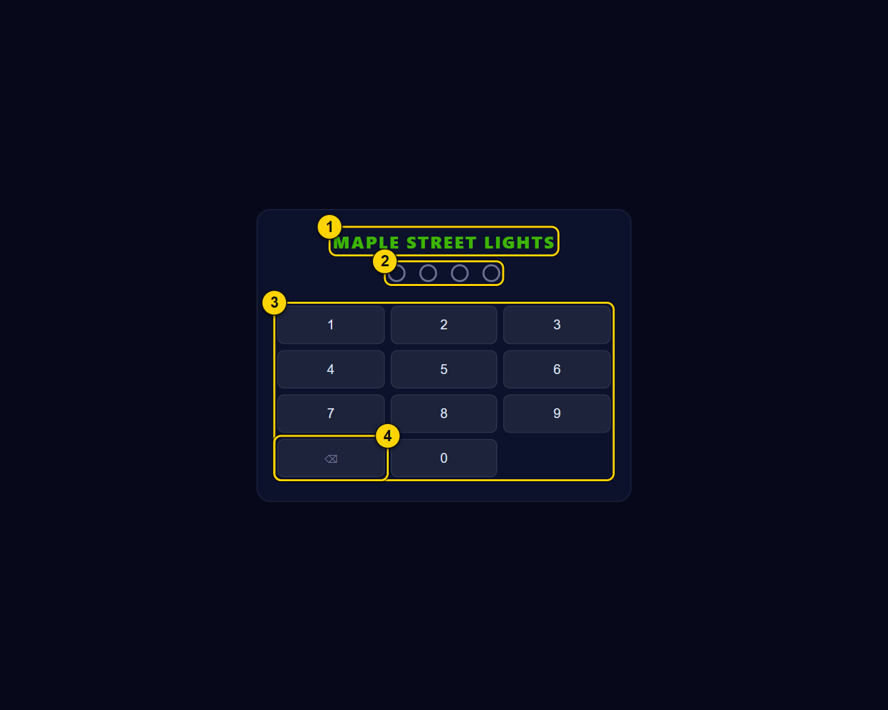
The sign-in screen.
1
Site name (and logo). Shows the name you chose in Settings.
2
PIN dots. One dot fills for each digit you type.
3
Number pad. Tap your 4-digit PIN. It signs you in automatically after the fourth digit — there is no Enter key.
4
Backspace. Removes the last digit if you mistype.
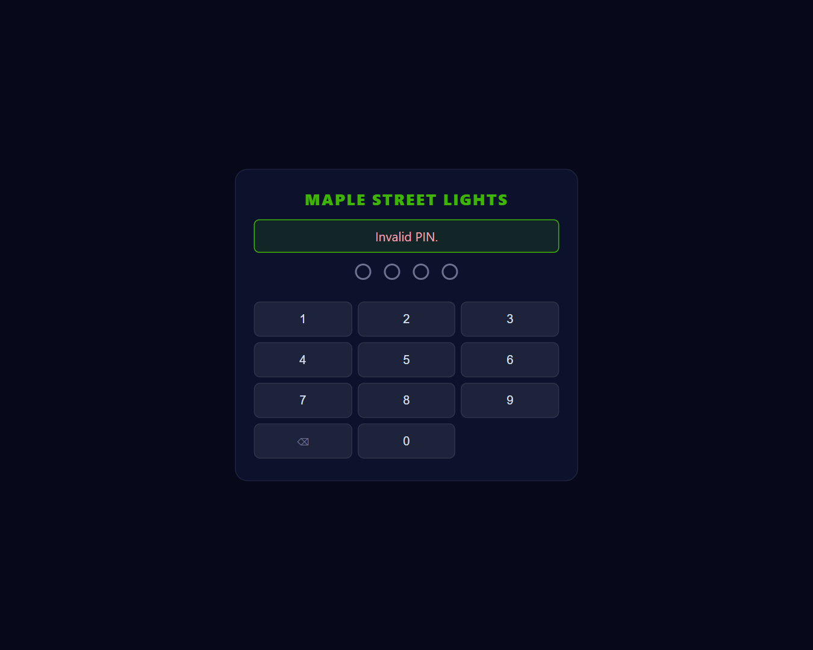
A wrong PIN shakes the dots and shows an error. Try again.
Note After five wrong PINs in a row, sign-in is paused for a short time, even for the correct PIN. Wait a few minutes and try again.
To sign out, tap Logout in the top-right corner of any page.
Getting Around
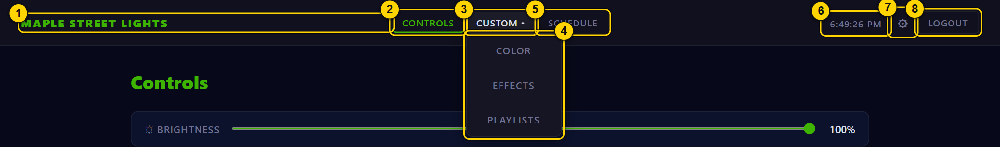
The top navigation bar, with the Custom menu open.
1
Site name / logo. Tap to return to the Home page.
2
Controls. Start and stop shows.
3
Custom menu. Opens a drop-down for the creative tools.
4
Color, Effects, Playlists. The three items in the Custom menu.
5
Schedule. View and edit the automatic schedule.
6
Clock. The controller's current time. If this is wrong, schedules will run at the wrong time — tell your installer.
7
Settings (gear). Appearance, alerts, zones, network, PIN and more.
8
Logout. Sign out.
The page you are on is highlighted in the bar. Messages (“Saved”, errors and so on) appear briefly as a small pop-up near the bottom of the screen.
Using a phone
On a narrow screen the bar collapses into a single ☰ menu button. Tap it to open the full list; tap Custom to reveal Color, Effects and Playlists.
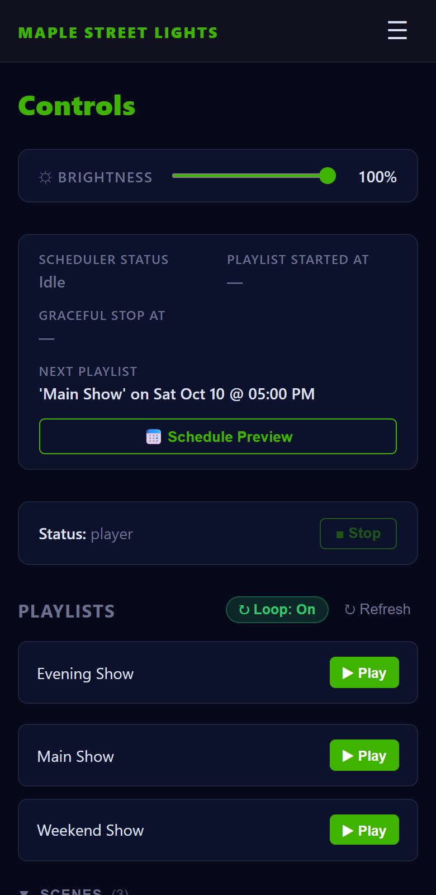
Controls on a phone.
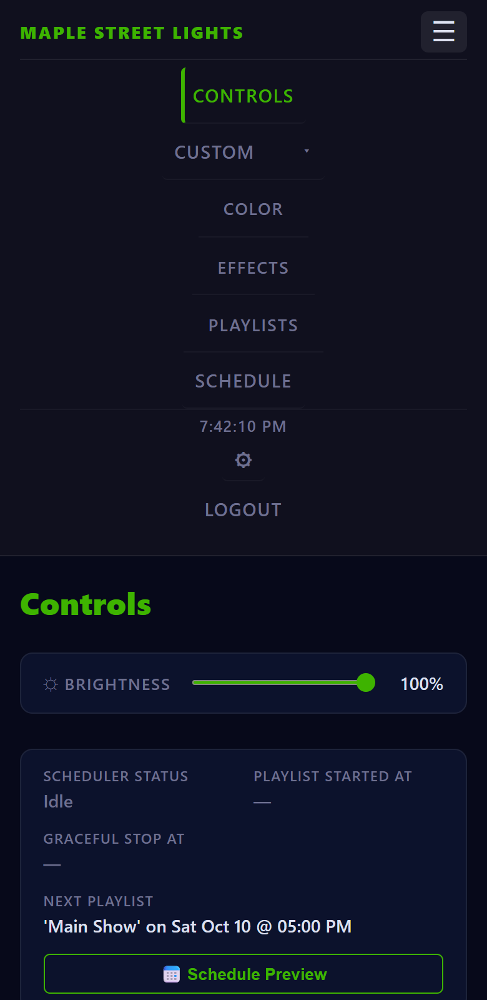
The ☰ menu open.
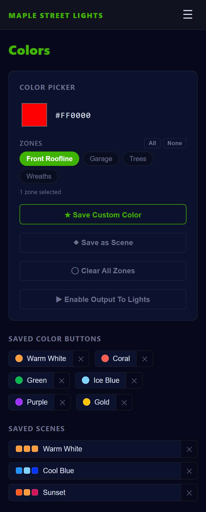
The Color page on a phone.
The Home Page
Home is the landing page after you sign in. Every card is a shortcut to that section.
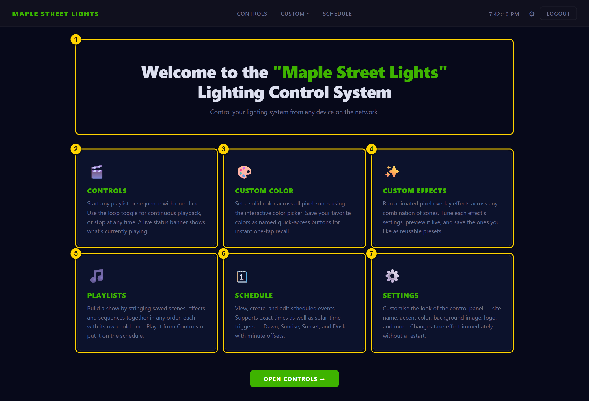
The Home page.
1
Welcome banner. Shows your site name.
2
Controls. Play and stop shows.
3
Custom Color. Paint zones with a color.
4
Custom Effects. Animated effects.
5
Playlists. Build your own shows.
6
Schedule. Automatic start and stop times.
7
Settings. Look, alerts, network, PIN.
Controls
Controls is the page you will use most. It lists everything that can be played and shows what the system is doing right now.
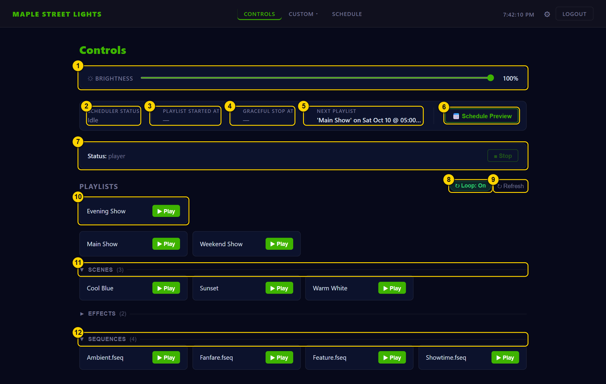
The Controls page.
1
Brightness. Drag the slider to dim or brighten the entire display. The setting is remembered, even after the controller restarts.
2
Scheduler Status. Shows Idle when nothing scheduled is running, Playing ‘name’ during a scheduled show, or Disabled if the scheduler has been switched off.
3
Playlist Started At. When the current scheduled show actually began.
4
Graceful Stop At. When the current show will end. The label changes with the stop type chosen for the entry (Graceful, Hard or Immediate — see Schedule).
5
Next Playlist. The next show on the schedule and when it starts. If the text is cut off, hover over it (or press and hold) to scroll.
6
Schedule Preview. Opens a day-by-day list of everything coming up. See below.
7
Status banner. Live report of what is playing. Updates every few seconds.
8
Loop toggle.Loop: On repeats a playlist until you stop it; Loop: Off plays it once. Your choice is remembered on this device.
9
Refresh. Reloads the list of playlists — use it after you create something new on another device.
10
Playlist card. Tap ▶ Play to start it. Your own playlists and any shows installed on the controller appear at the top.
11
Scenes group. Every scene you saved on the Color page. Tap the group heading to fold or unfold it.
12
Sequences group. Individual light sequences. A small speaker icon on a card means it plays music.
Tip Effects you saved as presets appear in an Effects group in the same way. Groups with more than six items start folded; the controller remembers how you leave them.
While something is playing
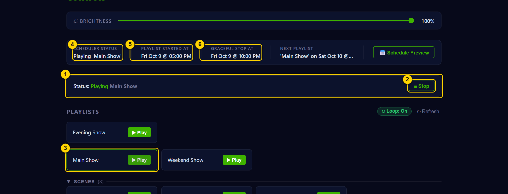
A show in progress.
1
Status banner. Reads Playing ‘Main Show’. A speaker with moving bars and the track name appears when music is playing.
2
Stop. Ends whatever is playing. It is greyed out when nothing is running.
3
Active card. The card of the playing show is highlighted.
4
Scheduler Status. Shows the scheduled show that is running.
5
Playlist Started At. The start time.
6
Graceful Stop At. The planned end time.
Starting something new replaces whatever was playing. Scenes and effects are “held” on the lights until you stop them or start something else.
Note Playing a scene or effect from here does not need any extra switch — the “Enable Output” button on the Color and Effects pages only applies to live editing on those pages.
Schedule Preview
Tap Schedule Preview to see exactly what the controller will play over the next 28 days — with sunset-based times, date ranges and priorities already worked out.
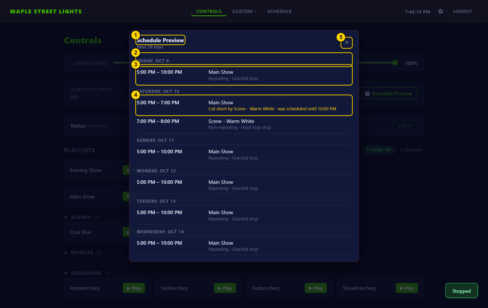
The Schedule Preview window.
1
Title and range. Shows how many days ahead the list covers.
2
Day heading. Each day that has something scheduled.
3
Show row. Start–end time, the show name, and whether it repeats and how it stops.
4
Cut-short row. Highlighted when a higher-priority entry starts partway through and takes over. The row shows when it will really end and what interrupts it. Rows marked Skipped never play because something of equal or higher priority is already running.
5
Close. Press × or Esc, or tap outside the window.
Color
The Color page lets you paint any zone a solid color. A zone is a section of your display — for example “Front Roofline” or “Trees” — named in Settings.
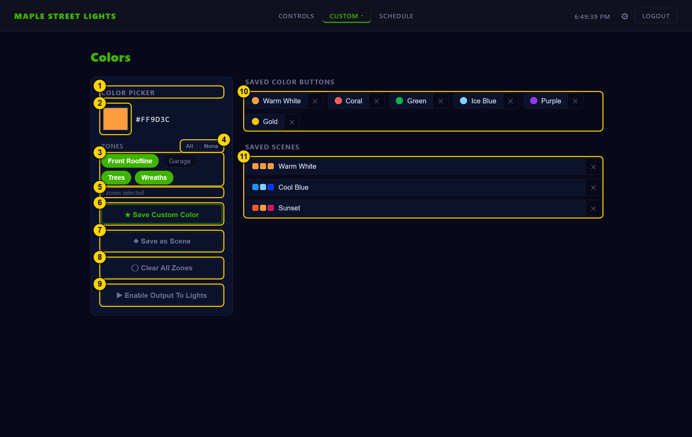
The Color page.
1
Color Picker. The panel where you build a color.
2
Color swatch. Tap the square to open your device's color chooser. The code beside it (such as #FF9D3C) is the exact color.
3
Zones. Tap one or more zone buttons to select them (highlighted = selected). At least one zone always stays selected. Each zone remembers its own color, so you can give every zone a different color.
4
All / None. Select every zone, or clear the selection down to one.
5
Selection count. Reminds you how many zones are selected.
6
Save Custom Color. Asks for a name and adds the current color to the Saved Color Buttons.
7
Save as Scene. Saves the colors of all your zones as a named scene (see below).
8
Clear All Zones. Turns all color off so the lights return to normal.
9
Enable Output To Lights. The safety switch — see below.
10
Saved Color Buttons. One tap applies that color to the selected zones. The × beside a button deletes it.
11
Saved Scenes. One tap applies a whole multi-zone look. The little squares preview the colors. The × deletes the scene.
The output switch
Nothing you do on this page reaches the lights until you press Enable Output To Lights. This protects a running show: you can open the page, experiment and prepare a scene without disturbing anything.
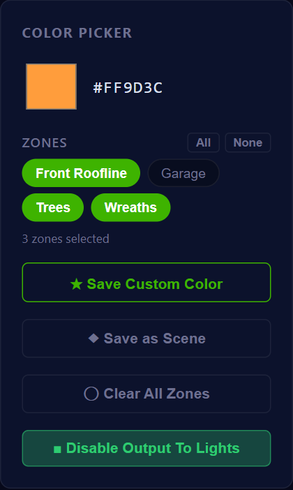
With output enabled the button turns green and reads Disable Output To Lights.
Pressing Enable stops any playing show and sends the colors you have chosen to the lights.
While output is on, every color change appears on the lights immediately.
Pressing Disable releases the lights and lets the system return to normal.
The switch starts off every time you open the page.
Making a color
Select the zone(s) you want to change.
Tap the color swatch and choose a color (or tap a Saved Color Button).
Press Enable Output To Lights if you have not already.
To keep the color, press Save Custom Color and give it a name.
Saving and using scenes
A scene is a snapshot of several zones, each with its own color — “Sunset” might be orange on the roofline, amber on the garage and magenta on the trees.
Select a zone and choose its color. Select the next zone and choose its color. Repeat until every zone has the color you want. (You can select several zones at once to give them the same color.)
Press Save as Scene.
Type a name and press OK.
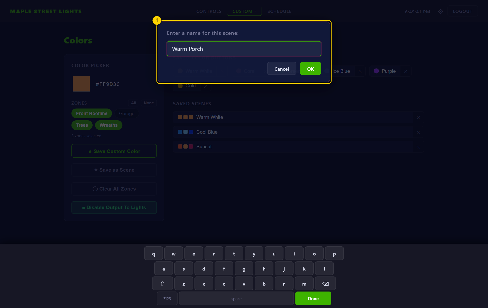
Naming a scene (the same box appears for custom colors and effect presets).
Each saved scene also becomes a playable item named Scene – (your name). That means it shows up on the Controls page, can be added to a Playlist, and can be put on the Schedule — for example “Warm White every night at sunset.”
Important A scene records a color for every zone on the page. A zone you have not colored is saved as the default red, so give every zone the color you want before pressing Save as Scene. If you select All (whole display), the scene stores just that single color for the whole display.
Effects
Effects are animated looks that run across your zones. You choose where, choose which effect, adjust it, and run it.
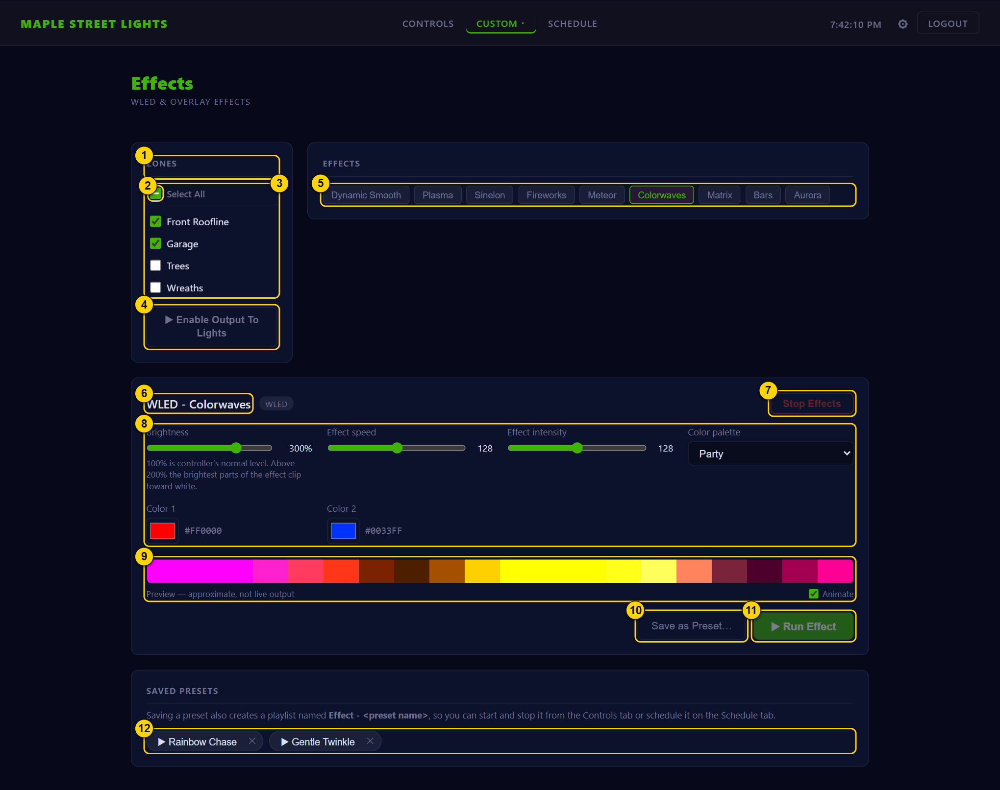
The Effects page with Colorwaves selected on two zones.
1
Zones panel. Choose where the effect runs.
2
Select All. Ticks or unticks every zone.
3
Zone checkboxes. Tick one or more zones. The effect runs on all ticked zones.
4
Enable Output To Lights. The same safety switch as the Color page. The Run button is greyed out until output is enabled.
5
Effect buttons. Tap one to open its settings. The selected effect is highlighted.
6
Effect name. The effect you are editing.
7
Stop Effects. Stops the running effect on the ticked zones.
8
Settings. Sliders, color choosers and menus that shape the effect — typically Brightness, Speed, Intensity, Palette and one or two Colors. These differ from effect to effect.
9
Preview strip. An approximate picture of how the effect will look. It is not the live lights. Untick Animate to freeze it.
10
Save as Preset… Saves the zones, effect and every setting under a name.
11
Run Effect. Starts the effect on the lights.
12
Saved Presets. Your saved looks. Tap one to load its zones and settings back into the editor, then press Run Effect. The × deletes it.
Running an effect
Tick the zones you want.
Press Enable Output To Lights.
Tap an effect button.
Adjust the sliders and watch the preview.
Press ▶ Run Effect. Change settings and press Run again to update it.
Press Stop Effects when you are done.
Tip The Brightness slider on these effects can go above 100%. 100% is the controller's normal level; higher values make the display brighter but, above about 200%, the brightest parts wash out toward white.
Presets
Press Save as Preset…, type a name, and it is stored. Like scenes, every preset also becomes a playable item named Effect – (your name), so you can start it from Controls, put it in a Playlist, or schedule it.
Playlists
A playlist is your own show: a list of scenes, effects, sequences and pauses that play one after another. Use it to make a “Warm White, then Rainbow, then a pause, then the Showtime sequence” evening that runs by itself.
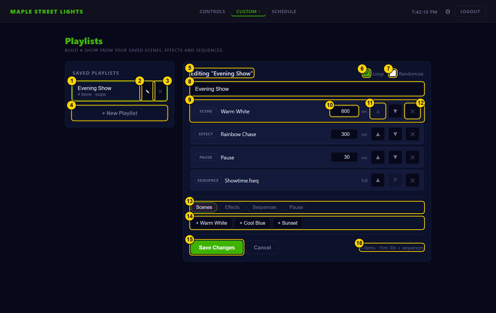
The Playlists page, editing a saved playlist.
1
Saved playlist. Tap the name to play it right now.
2
Edit (pencil). Loads the playlist into the builder on the right.
3
Delete (×). Removes the playlist after asking you to confirm.
4
New Playlist. Clears the builder so you can start a fresh one.
5
Builder title. Says New Playlist or Editing “name”.
6
Loop. Ticked: the playlist starts over when it finishes.
7
Randomize. Ticked: the items play in a different order every time. The list below is then just the pool of items.
8
Name. Up to 64 characters. This is the name shown on Controls and Schedule.
9
Item. Each row is one step. The tag shows its type: Scene, Effect, Sequence or Pause.
10
Hold time. How many seconds a scene, effect or pause lasts. Sequences always play to the end and show full.
11
Move up / down. Changes the order.
12
Remove (×). Takes the item out of the playlist.
13
Item tabs. Switch between Scenes, Effects, Sequences and Pause.
14
Item buttons. Tap one to add it to the end of the list.
15
Save Playlist. Stores your work (reads Save Changes when editing). Cancel abandons it.
16
Total time. Adds up the hold times, plus “+ sequences” when the list includes sequences of their own length.
Building a playlist
Press + New Playlist and type a name.
Choose a tab (Scenes, Effects, Sequences or Pause) and tap items to add them in order.
Set each item's hold time in seconds.
Use the arrows to reorder and × to remove.
Choose Loop and/or Randomize.
Press Save Playlist.
Your playlist now appears at the top of the Controls page and in the schedule's playlist list.
Important If a scene or effect used by a playlist is later deleted, that row turns red and says (deleted). Remove it before saving.
Schedule
The Schedule decides what plays automatically — every night, on weekends, or during a particular season. Once a schedule is set you do not need to touch anything.
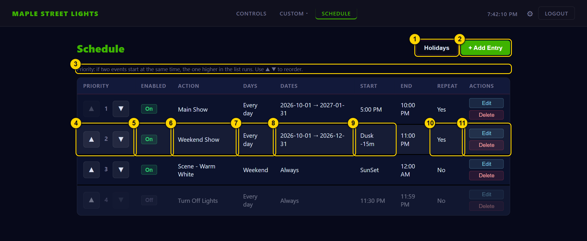
The Schedule page.
1
Holidays. Manage named date ranges that repeat every year (see below).
2
+ Add Entry. Create a new schedule entry.
3
Priority note. If two entries start at the same moment, the one higher in the list wins.
4
Priority. Use ▲ and ▼ to move an entry up or down. Position 1 has the highest priority.
5
Enabled. Tap the green On / grey Off badge to switch an entry on or off without deleting it. Disabled rows are dimmed.
6
Action. What plays — a playlist, scene, effect or sequence.
7
Days. Which days of the week.
8
Dates. The date range, or a saved range name.
9
Start. Start time. Dusk −15m means 15 minutes before dusk.
10
End. End time.
11
Repeat. Whether the item loops until the end time.
12
Actions.Edit opens the entry; Delete removes it after confirmation.
In the screenshot the numbered markers 4–11 describe the second row; every row has the same columns.
Adding or editing an entry
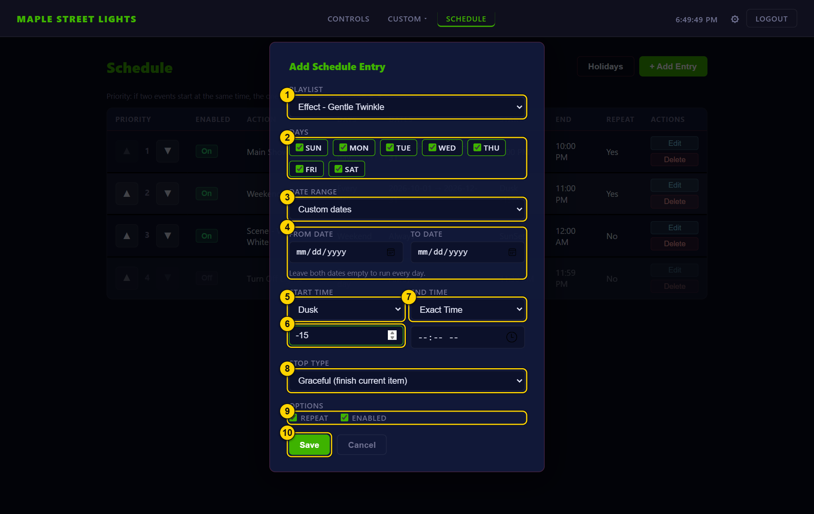
The Add Schedule Entry window.
1
Playlist. Pick what to play. Your playlists, scenes, effects and sequences are all listed.
2
Days. Tick the days of the week. Leave all ticked for every day.
3
Date Range. Choose Custom dates or one of your saved date ranges.
4
From / To Date. Only the dates between these run. Leave both empty to run every day all year.
5
Start Time. Choose Exact Time to type a clock time, or Dawn, Sunrise, Sunset or Dusk to follow the sun.
6
Offset. For sun-based times: minutes before (negative, e.g. -30) or after (positive) the sun event. Range −360 to +360.
7
End Time. Works exactly like Start Time.
8
Stop Type.Graceful lets the current item finish. Hard Stop stops immediately. Immediate stops at once with no lead-out.
9
Options.Repeat loops the playlist until the end time. Enabled turns the entry on.
10
Save. Stores the entry. Cancel closes the window.
Tip Sun-based times follow the date and location set on the controller, so they shift automatically through the year.
Saved date ranges (Holidays)
A saved date range is a named period that repeats every year, such as Summer Season: Jun 1 – Aug 31. Create them with the Holidays button. Choose one in an entry's Date Range list and the entry follows it forever — no need to re-enter dates next year. Editing a range updates every entry that uses it.
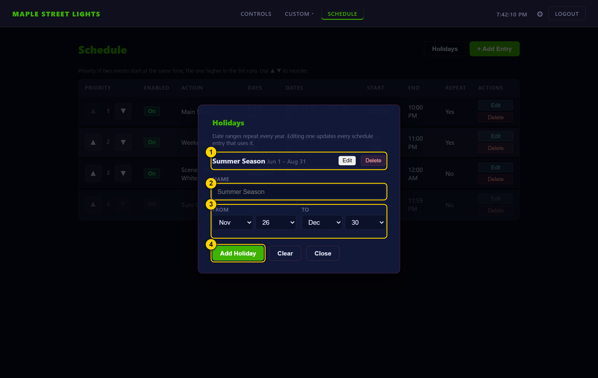
The Holidays manager.
1
Saved list. Your saved ranges. Choose one to edit or delete it.
2
Name. For example Summer Season.
3
From / To. Pick the month and day each range starts and ends.
4
Add Holiday. Saves the range. Clear empties the form; Close shuts the window.
Priority in plain English
Only one thing can play at a time. If a higher entry (lower number) starts while a lower one is running, it takes over. If a lower entry starts while a higher one is running, it is skipped. Use Schedule Preview on the Controls page to see the result.
Settings
Open Settings with the gear icon in the top bar. Cards are grouped by topic; most have their own Save button. Settings take effect straight away — no restart needed.
Site Name. Appears in the top bar and on the sign-in screen.
2
Logo. Paste an image web address, or press Upload.
3
Upload. Choose a picture from your device (up to 8 MB). Clear the field to remove the logo.
4
URL Path. The last part of the address used to reach this panel.
5
Change Address. Applies the new address immediately. The old address stops working, so update bookmarks.
6
Accent color. Buttons, highlights and the active menu item.
7
Top bar color. Background of the navigation bar.
8
Menu text color. Text color of the navigation links.
9
Body text color. The main text color.
10
Reset. Returns that color to the default.
11
Background image. A full-page picture. A dark overlay is added so text stays readable. Leave blank for plain dark.
12
Upload. Choose a background from your device.
13
Save Settings. Saves the site name, logo, colors and background together. (Change Address has its own button.)
Tip Pick text and background colors that contrast. If you ever make the panel hard to read, press Reset beside each color.
Backup & Restore
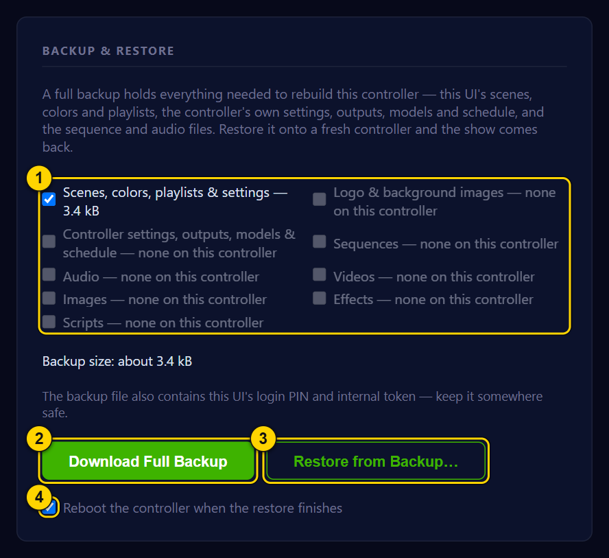
The Backup & Restore card.
1
Contents summary. A tick list of what the backup will contain and how large it is — your scenes, colors and playlists, the controller's configuration and schedule, and any sequence, audio and image files.
2
Download Full Backup. Saves everything to a file on your device.
3
Restore from Backup… Choose a backup file to bring the whole show back — useful when replacing a controller.
4
Reboot when finished. Leave ticked so the restored settings take full effect.
Important The backup file contains your login PIN. Store it somewhere private. Download a backup before major changes and again after you finish programming a show.
Note BLD Remote Access is not included in a backup. If you restore onto a new or re-imaged controller, it will not be connected for remote support until you enrol it again with a new code. This is deliberate: the connection key belongs to one controller only and is never saved into a file you could share.
Alerts and Reminders
Alerts email (or text) you when something is wrong — a scheduled show did not start, or the player stopped responding — and can send a heads-up before a show begins.
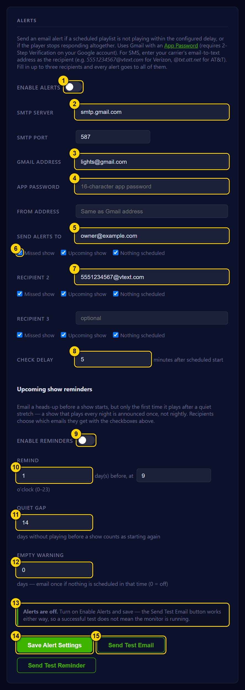
The Alerts card.
1
Enable Alerts. Master switch for problem alerts.
2
SMTP Server / Port. Leave as smtp.gmail.com and 587 for Gmail.
3
Gmail Address. The account that will send the emails.
4
App Password. A 16-character password created in your Google account (requires 2-Step Verification). Do not use your normal Gmail password.
5
Send Alerts To. Up to three recipients. For text messages use your carrier's email-to-text address, e.g. 5551234567@vtext.com (Verizon) or @txt.att.net (AT&T).
6
Per-recipient tick boxes. Choose which emails each person receives: Missed show, Upcoming show and Nothing scheduled.
7
Recipient 2 / 3. Optional extra people.
8
Check Delay. How many minutes after a scheduled start to wait before raising the alarm.
9
Enable Reminders. Switch for upcoming-show reminder emails.
10
Remind. How many days before, and at what hour (0–23, 24-hour clock), to send the reminder.
11
Quiet Gap. A show that plays every night is announced once, not nightly. This sets how many days without playing counts as “starting again”.
12
Empty Warning. Email once if nothing is scheduled in this many days. 0 turns it off.
13
Status box. Says whether the alert monitor is running.
14
Save Alert Settings. Saves everything in this card.
15
Send Test Email. Sends a sample so you can confirm delivery. Send Test Reminder sends a sample reminder.
Note A successful test email proves your email settings work. It does not prove monitoring is on — check that Enable Alerts is switched on and saved, and that the status box says the monitor is running.
Color Zones
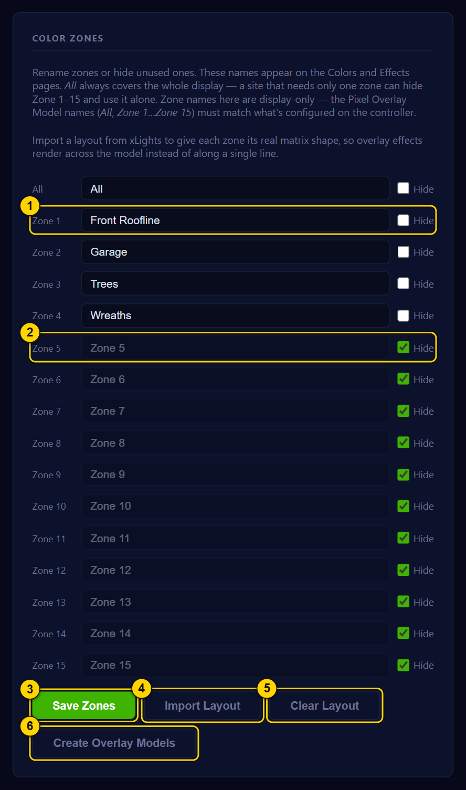
The Color Zones card.
1
Zone name. Type a friendly name. These names appear on the Color and Effects pages.
2
Hide. Tick Hide for zones you do not use so they are removed from those pages.
3
Save Zones. Stores names and hidden choices.
4
Import Layout. Reads your lighting design and gives each zone its real shape so effects look right across a matrix or display. Review the suggested grouping, then confirm.
5
Clear Layout. Forgets the imported shapes.
6
Create Overlay Models. Sets up the zone definitions on the controller. A confirmation explains the effect; settings you already configured are not overwritten.
The first entry, All, always covers the whole display. A site with only one zone can hide the rest and use All alone. Import Layout and Create Overlay Models are normally done once during installation — ask your installer before using them.
Pixel Controllers
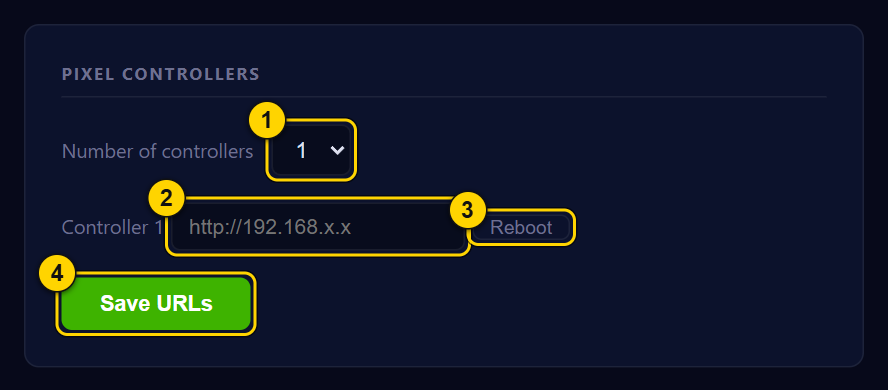
The Pixel Controllers card.
1
Number of controllers. How many pixel controllers are in your system (1–8).
2
Controller address. Its web address on your network, for example http://192.168.1.60.
3
Reboot. Restarts that controller after you confirm.
4
Save URLs. Stores the addresses.
Network and WiFi Hotspot
These cards control how the controller connects to your network. Change them only if you know the correct values — a wrong entry can take the controller off the network.
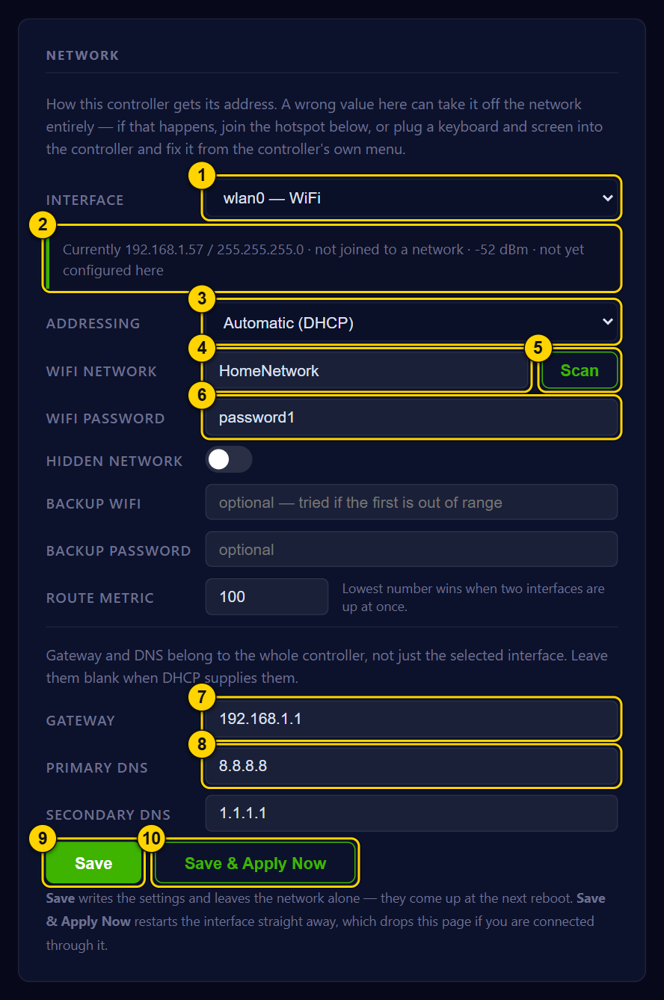
The Network card, showing a WiFi connection.
1
Interface. Wired (eth0) or WiFi (wlan0).
2
Status. The address it has right now and signal strength.
3
Addressing.Automatic (DHCP) is right for nearly every home or business. Static IP reveals address and subnet-mask fields.
4
WiFi Network. The network name to join.
5
Scan. Lists the WiFi networks in range so you can pick one.
6
WiFi Password. The network password.
7
Gateway. Your router's address. Leave blank when DHCP supplies it.
8
DNS. Primary and Secondary DNS servers. Leave blank unless told otherwise.
9
Save. Writes the settings; they take effect at the next reboot.
10
Save & Apply Now. Applies them immediately, which disconnects this page if you are connected over that interface.
There are also optional Hidden Network, Backup WiFi (tried if the first is out of range) and Route Metric (which connection wins when two are active; lowest number wins) fields.
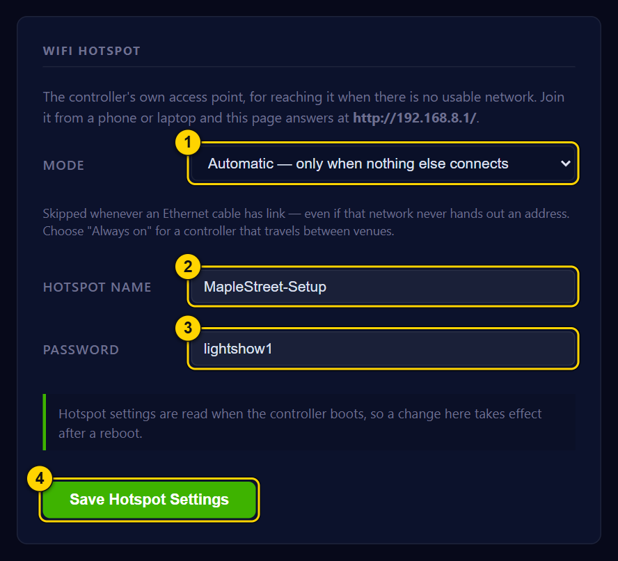
The WiFi Hotspot card.
1
Mode.Automatic — the hotspot appears only when the controller cannot connect to any other network. Always on — the hotspot is always available. Disabled — never.
2
Hotspot Name. The WiFi network name your phone will see.
3
Password. 8–63 characters.
4
Save Hotspot Settings. Stores them. Hotspot changes take effect after a reboot.
Tip The hotspot is your safety net: join it from a phone and the control panel answers at the address shown on the card (usually http://192.168.8.1/), even with no building network.
Security
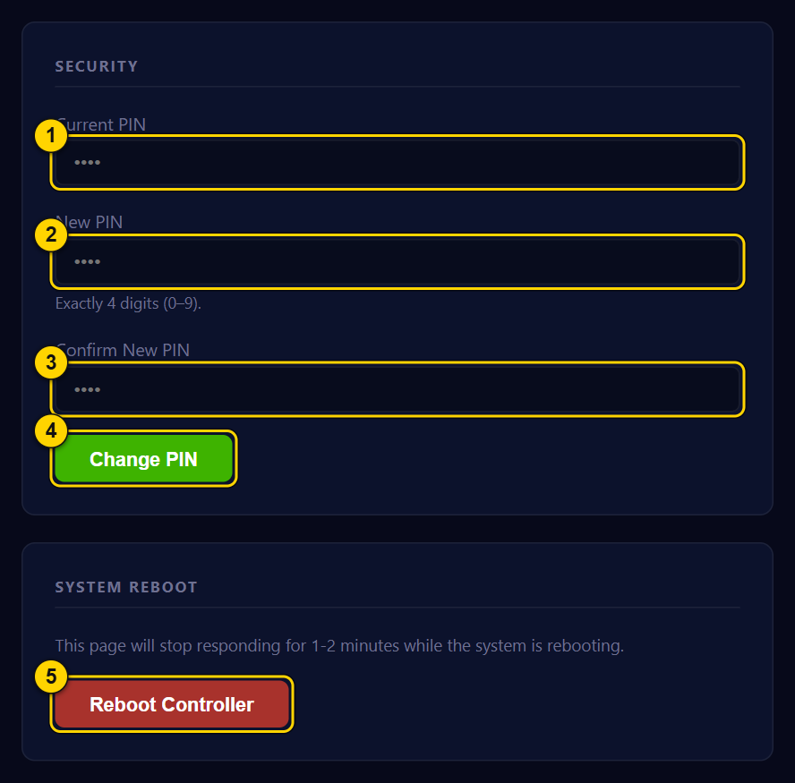
The Security card and the Reboot card.
1
Current PIN. Your existing 4-digit PIN.
2
New PIN. Exactly four digits, 0–9.
3
Confirm New PIN. Type the new PIN again.
4
Change PIN. Applies the change.
5
Reboot Controller. Restarts the controller after a confirmation. The panel will not respond for 1–2 minutes.
If you were given a master PIN by your installer, it always works to sign in, even if the regular PIN is changed. Signing in with it adds a Master PIN card to Settings, where you can set a new master PIN and reset a forgotten regular PIN. Keep it somewhere safe.
Rebooting
Use Reboot Controller if something seems stuck. A confirmation appears first. Shows resume according to the schedule once the controller is back up.
Tips and Troubleshooting
Everyday tips
Build with output off. On Color and Effects nothing reaches the lights until you enable output — set everything up first, then press the button.
Name things clearly. Scene, effect and playlist names appear everywhere, including the schedule.
One tool, many places. A scene or effect preset can be played from Controls, placed in a playlist, and scheduled.
Use Schedule Preview after changing the schedule to confirm what will really happen over the next month.
Back up from Settings after any big programming session.
Use the priority arrows to make special events override your everyday show.
If something is not working
Problem
What to try
I tap Play and nothing happens
Wait a few seconds and check the status bar. Press Refresh. Make sure no one has put the lights into a color/effect session with output enabled on another device.
My color or effect does not show on the lights
Press Enable Output To Lights (it must read “Disable Output”). For effects, tick at least one zone.
A zone is missing on Color or Effects
It may be hidden. Settings → Color Zones → untick Hide.
The scheduled show did not start
Check the entry is On, the day and date range are right, and a higher-priority entry is not running. Open Schedule Preview. Check the clock in the top bar is correct.
Times are wrong by hours
The controller's clock or time zone is off. Contact your installer.
The panel will not load
Confirm your device is on the same network. After a reboot, wait 1–2 minutes (a brief “503” or “unavailable” message is normal). If you changed the web address, use the new one.
I cannot reach it from my phone
Join the controller's WiFi Hotspot (if enabled) and open http://192.168.8.1/.
Wrong PIN / locked out
After five wrong tries wait a few minutes. If the PIN is forgotten, use the master PIN or contact your installer for a reset.
I changed the web address and now it will not open
The old address stops working immediately. Type the new address.
Test email works but I get no alerts
Make sure Enable Alerts is on and saved, and the recipient's tick boxes are ticked.
A playlist shows a red “(deleted)” item
A scene or effect it used was deleted. Remove the row, then save.
Quick Reference
I want to…
Go to
Do this
Start a show
Controls
Tap ▶ Play on its card
Stop everything
Controls
Tap ■ Stop
Dim the whole display
Controls
Drag the Brightness slider
See what plays this month
Controls
Schedule Preview
Make a color
Custom → Color
Pick zones, pick color, Enable Output
Save a multi-zone look
Custom → Color
Save as Scene
Run an animated effect
Custom → Effects
Tick zones, Enable Output, tap effect, Run Effect
Build my own show
Custom → Playlists
+ New Playlist, add items, Save
Play something automatically
Schedule
+ Add Entry
Make a seasonal schedule
Schedule
Holidays button, then pick it as the Date Range
Pause a schedule entry
Schedule
Tap its On badge to make it Off
Change colors or logo
Settings (gear)
Appearance cards → Save Settings
Get emailed about problems
Settings
Alerts card
Change my PIN
Settings
Security card
Save my configuration
Settings
Backup & Restore → Download Full Backup
Glossary
Zone
A named section of your lighting display, such as “Front Roofline”.
Scene
A saved still look: a color for each of several zones.
Effect
An animated look, such as aurora or plasma.
Preset
A saved effect, with its zones and settings.
Sequence
A pre-programmed, often music-synchronized light show.
Playlist
A list of items (scenes, effects, sequences, pauses) that play in order.
Output
The connection from the control panel to the lights on the Color and Effects pages. It is off until you enable it.
Graceful stop
Lets the current item finish before stopping.
Priority
The order of schedule entries; higher in the list wins.
Hotspot
The controller's own WiFi network, used when there is no other way to reach it.